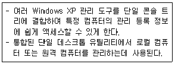
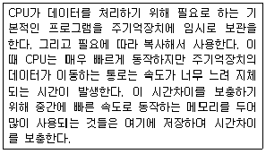
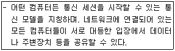

PC정비사-2급 (2013-10-20 기출문제)
1과목: PC유지보수
1. 관리 도구 중 다음은 어느 항목에 대한 설명인가?

- 컴퓨터 관리
- 데이터 원본(ODBC)
- 로컬 보안 정책
- 구성 요소 서비스
(정답률: 64%)

2. 운영체제의 발전과정과 추세에 대한 다음의 설명 중 잘못된 것은?
- 운영체제는 초기에는 자원의 효율적 관리가 가장 중요한 목표였으나 점차 사용 환경이 더 중요한 목표가 되었다.
- 사용환경의 편리성을 위해 하드웨어적인 문제는 점차 사용자로부터 격리되어 시스템의 책임 하에 운영하도록 개선되었다.
- 사용 편의성 증대를 목적으로 그림 사용자 접속 환경이 개발되어 사용자는 직관적이고 간편하게 사용할 수 있도록 하였다.
- GUI 환경은 사용의 편의성을 위해 각종 설정을 단순화 시켰으므로 누구나 쉽게 시스템의 설정 상태를 자유롭게 조절할 수 있게 되었다.
(정답률: 68%)
3. 두 개 이상의 프로세스를 동시에 처리할 수 없으므로, 프로세스에 대한 순서를 결정하는 것은?
- 상호 배제
- 임계 구역
- 동기화
- 시분할 처리
(정답률: 69%)
4. 다음은 무엇에 대한 설명인가?

- 롬(ROM)
- 플래시롬(Flash ROM)
- 캐시 메모리(Cache)
- 마스크 롬(Mask ROM)
(정답률: 93%)
5. 제어판의 시스템 등록정보에서 장치관리자에 표시되는 ‘!’표시의 원인으로 잘못된 것은?
- 장치가 제대로 연결되지 않았거나 드라이버가 제대로 설치되지 않았다.
- 장치 구동 드라이버 파일이 손상되어 제대로 작동하지 않는다.
- 다른 장치와 충돌이 발생하였다.
- PnP(Plug & Play) 기능이 지원되지 않는 장치이다.
(정답률: 76%)
6. 홈 엔터테인먼트 허브 역할을 하도록 설계된 Windows XP의 버전은?
- Home Edition
- Professional
- Media Center Edition
- Black Edition
(정답률: 66%)
7. Windows XP에서 다른 프로그램을 설치하기 위한 방법으로 잘못된 것은?
- 설치용 파일(install.exe, setup.exe)이 있을 경우는 탐색기에서 네트워크 드라이브를 연결한다.
- 자동 설치 프로그램 CD-ROM일 경우는 바로 설치작업이 이루어진다.
- 제어판의 프로그램 추가/제거에서 ‘새 프로그램 추가’를 눌러 실행한다.
- 시작메뉴의 실행에서 설치 파일명을 입력하거나 찾아보기로 찾아서 실행한다.
(정답률: 55%)
8. 하드디스크를 오래 사용하다보면 파일이 여러 곳에 산재하게 되는데, 이런 파일들을 모아 디스크 액세스 속도를 향상시켜주는 시스템 도구는?
- 디스크 검사
- 디스크 조각 모음
- 디스크 에러 전송
- 디스크 공간 늘림
(정답률: 85%)
9. 제시된 컴퓨터 상황이 악성코드와 관련 없는 것은?
- 화면에 이상한 글이 표시 된다.
- 몇몇 파일이나 프로그램이 갑자기 사라진다.
- 컴퓨터에서 고주파음이 난다.
- 컴퓨터 부팅시간이 평소보다 오래 걸린다.
(정답률: 88%)
10. Windows XP의 콘솔 명령어에 대한 설명으로 잘못된 것은?
- COPY - 하나 이상의 파일을 다른 위치로 복사한다.
- DEL - 디렉터리를 삭제하는 명령어이다.
- ATTRIB - 파일 속성(특성)을 보여 주거나 변경하는 데 사용한다.
- FIXMBR - 시스템 파티션의 MBR이 망가져서 부팅을 할수 없을 때 복구하는 명령어이다.
(정답률: 64%)
11. Windows XP의 네트워크 구성요소에서 사용되는 프로토콜이 아닌 것은?
- TCP/IP
- NETBEUI
- IPX/SPX
- RIP
(정답률: 63%)
12. Windows XP에서 윈도우 시작과 관련된 프로그램을 관리 할 수 있는 명령어는?
- msinfo32
- msconfig
- tsshutdn
- convert
(정답률: 86%)
13. 감염 후 특징적인 증상으로 매년 4월 26일 Flash Memory의 내용과 모든 하드디스크의 데이터를 파괴하는 바이러스는?
- 스파이웨어
- 마이둠웜
- 소빅웜
- CIH 바이러스
(정답률: 77%)
14. 다음 중 가상 메모리와 관련이 없는 것은?
- Page Fault
- Demand Paging
- Thrashing
- DMA
(정답률: 82%)
15. Windows XP에서 장치 관리자에 관한 설명 중 잘못된 것은?
- 장치 관리자는 모든 하드웨어의 정보를 확인하며 하드웨어의 추가/제거 등의 작업을 수행할 수 있다.
- 장치 관리자의 정보는 표시하는 방법에 따라 장치 종류별 또는 연결별 구분 표시가 가능하다.
- 자원별 표시를 통해 각 장치가 사용하는 메모리 용량을 확인 할 수 있다.
- 장치가 사용하는 IRQ등의 정보를 확인 할 수 있다.
(정답률: 61%)
2과목: PC운영체제
16. JEDEC(Joint Electron Device Engineering Council)에서 제정한 RAM의 규격으로 잘못된 것은?
- ODD
- DDR3
- RD-RAM
- SDR
(정답률: 83%)
17. HDD의 용량을 측정하려 할 때, 사용되는 값이 아닌 것은?
- Cylinder
- Disk
- Head
- Sector
(정답률: 73%)
18. 물리적인 하나의 하드디스크를 용량에 따라 여러 개의 논리적 하드디스크 드라이브로 분할하는 것을 뜻하는 용어는?
- 스핀들 (Spindle)
- 로우레벨 포맷(Low-level Format)
- 파티션(Partition)
- 하드디스크 인터리브 (Hard Disk Interleave)
(정답률: 91%)
19. 자기(Magnetism)를 사용하여 저장하는 방식이 아닌 장치는?
- FDD
- Zip Drive
- CD-ROM
- HDD
(정답률: 67%)
20. PS/2 커넥터에 대한 설명으로 잘못된 것은?
- 5핀으로 구성되어 있다.
- +5V의 전원이 공급된다.
- PS/2는 마우스나 키보드를 PC에 접속하기 위해 IBM이 개발한 포트이다.
- 마우스와 키보드가 사용된다.
(정답률: 65%)
21. 사용자가 손가락으로 볼을 직접 굴려 작동하는 형태의 마우스는?
- 볼 마우스
- 터치 패드
- 포인팅 스틱
- 트랙볼 마우스
(정답률: 83%)
22. 프린터의 인쇄 방식과 특징을 설명한 것 중 올바른 것은?
- 잉크젯 프린터 - 비충격식 프린터로 여러 개의 점을 조합하여 문자를 인쇄한다.
- 도트 매트릭스 프린터 - 비충격식 프린터로 소음이 크고 인쇄 속도가 늦다.
- 열전사 프린터 - 충격식 프린터로 유지비가 저렴하고 인쇄물을 오랫동안 보관한다.
- 레이저 프린터 - 비충격식 프린터로 높은 해상도와 유지비가 저렴하고 빠른 인쇄가 가능하다.
(정답률: 71%)
23. PC에서 사용하는 비디오 카드의 어댑터 종류로 올바른 것은?
- PCI, PCI-EXPRESS
- PCI, AGP, SCSI
- PCI, ATX, AGP
- AGP, EIDE, PCI-EXPRESS
(정답률: 73%)
24. L2 캐시의 동작 방식이 아닌 것은?
- 비동기 방식
- 동기 방식
- 슬롯 방식
- 파이프라인 버스트 방식
(정답률: 70%)
25. 네트워크를 구축하기 위한 하드웨어로 볼 수 없는 것은?
- LAN Card
- Router
- UTP Cable
- TCP/IP
(정답률: 69%)
26. 사운드카드가 음을 만들기 위해 사용하는 방법이 아닌 것은?
- PCM 방식
- FM 방식
- AM 방식
- Wavetable 방식
(정답률: 70%)
27. PC의 메인보드는 메인보드를 제어하는 칩셋에 의하여 성능이 달라질 수 있으나 이러한 하드웨어 뿐만 아니라 제어 소프트웨어도 중요하다. 이러한 것을 무엇이라고 하는가?
- BIOS
- CMOS
- CACHE
- TCP/IP
(정답률: 74%)
28. 다음 소켓 규격 중 AMD의 지원규격이 아닌 것은?
- 소켓 FM2
- 소켓 AM3
- 소켓 754
- 소켓 1155
(정답률: 70%)
29. ‘00-00-1C-D1-85-2C’ 의 의미는?
- MAC Address
- Network Address
- IP Address
- Node Address
(정답률: 86%)
30. PC의 메인보드에 대한 설명으로 잘못된 것은?
- 현재 ATX 보드가 가장 널리 사용되고 있다
- 전원부의 페이즈 구성이 간소화 될수록 좋다.
- 내장 그래픽 칩셋이 내장된 보드는 외장 그래픽카드가 없이도 기본적인 화면 출력을 제공한다.
- Mini-ITX 는 170 x 170 mm 크기의 규격이다.
(정답률: 68%)
3과목: PC주변기기
31. 각종 커넥터들을 메인보드와 연결하고자 한다. 다음 중 잘못된 것은?
- 전원 스위치와 리셋 스위치는 커넥터에 반대로 연결해도 동작한다.
- LED 커넥터를 반대로 연결하면 올바르게 동작이 안 된다.
- 모든 LED 커넥터는 3개의 선으로 구성되고 검정색 선이 양(+)극이다.
- 메인보드 IDE커넥터의 1번 핀이 하드디스크 케이블의 빨간 선과 일치하도록 연결한다.
(정답률: 70%)
32. 노트북을 구성하는 부품에 대한 설명 중 잘못된 것은?
- 노트북용 S-ATA 하드디스크는 데스크톱 제품과 인터페이스 단자 규격이 같다.
- 노트북은 대부분 메인보드에 그래픽 칩셋이 포함되어 있다.
- 데스크톱 CPU와 노트북 CPU는 대부분 호환이 가능하므로 발열량을 고려하여 구매한다.
- 일반적으로 노트북의 메모리(RAM) 슬롯은 데스크톱 보다 작으므로 호환이 되지 않는다.
(정답률: 67%)
33. 잉크젯프린터를 이용하여 인쇄하는 도중 줄이 심하게 가서 작은 글자가 거의 알아 볼 수 없을 때, 적당한 수리 방법은?
- 알콜을 면봉에 바른 다음 노즐과 센서 부분을 닦아준다.
- 윤활유를 이용하여 프린터 헤드를 청소해 준다.
- 프린터 연결 케이블을 교체한다.
- 프린터 드라이버를 교체한다.
(정답률: 78%)
34. BIOS에 의한 부팅 시, 동작하는 주요 파일에 대한 설명 중 잘못된 것은?
- .sys 파일은 드라이버 설정과 관련된다.
- .dll 파일은 프로토콜과 관련된다.
- 운영체제의 식별을 위해 MBR에 정보를 저장한다.
- dll 내의 함수를 호출하는 프로그램은 boot.int 이다.
(정답률: 64%)
35. 컴퓨터용 휴즈에 대한 설명 중 잘못된 것은?
- 유리로 된 2~3cm의 원통형 휴즈를 사용한다.
- 휴즈는 전원공급기 외부에서 쉽게 교체할 수 있게 구성되어 있다.
- 분해 시, 감전의 위험이 있으므로 전기선을 콘센트에서 분리해 작업하는 것이 좋다.
- 휴즈는 사용전압과 전류에 맞는 것을 사용해야 한다.
(정답률: 81%)
36. 부팅 과정에 만날 수 있는 에러메시지와 확인해야할 점검 사항이다. 잘못 연결된 것은?
- BIOS ROM Checksum Error - CPU의 계산 오류로 나올 수 있으므로 CPU가 제대로 장착되어 있는지 확인한다.
- Drive Not Ready Error - 새로 장착한 하드디스크의 영역 분할정보가 없는 경우 Fdisk를 실행한다.
- Hard Disk Controller Failure - 하드디스크의 데이터 케이블이 메인보드에 제대로 연결되어 있는지 확인한다.
- Keyboard Error or No Keyboard Present - 컴퓨터 본체에 Keyboard가 제대로 연결되어 있는지 확인한다.
(정답률: 55%)
37. 케이스 전면의 스위치 표시 램프에 대한 설명으로 맞는 것은?
- LED는 디스크가 움직일 때 불이 들어온다.
- LED는 방향을 반대로 연결해도 문제가 없다.
- 스위치는 극성이 없으므로 위치만 맞으면 된다.
- LED에 항상 불이 안들어오면 컴퓨터에 이상이 생긴 것이다.
(정답률: 63%)
38. 과도한 CPU 오버 클러킹을 함으로써 발생되는 문제가 아닌 것은?
- 시스템이 자주 다운된다.
- CPU에 과도한 발열이 생긴다.
- PSU에 설치된 팬이 멈춘다.
- CPU의 수명을 단축시킨다.
(정답률: 82%)
39. 시스템 업그레이드를 위한 준비사항으로 잘못된 것은?
- 부팅 디스켓을 만들고 PC 환경을 기록해 둔다.
- CPU나 램의 업그레이드시 가장 최고성능의 최신 부품을 구입한다.
- 하드디스크의 중요 자료를 백업해 둔다.
- 현재 보유하고 있는 시스템을 분석하여 가능한 제품을 업그레이드한다.
(정답률: 81%)
40. Windows 사용 중 치명적인 오류가 불규칙적으로 발생한다. 이러한 현상은 특정 프로그램을 실행할 뿐만 아니라 광범위하게 발생한다. 이에 대한 일반적인 원인으로 잘못된 것은?
- 파티션 설정이 잘못되었다.
- 중요한 H/W 또는 S/W와 Windows의 호환성 문제이다.
- Windows의 시스템 정보 파일에 오류가 발생하였다.
- 중요 드라이버 파일에 오류가 발생하였다.
(정답률: 70%)
41. Windows를 사용하는 도중 속도가 점점 느려지는 현상이 발생하였다. 문제의 원인으로 잘못된 것은?
- 레지스트리가 점점 커지고 불필요한 내용이 쌓이기 때문이다.
- Windows에서 사용하는 DLL과 드라이버 파일이 많아지기 때문이다.
- 하드디스크의 단편화가 심해지기 때문이다.
- 주기억 장치(RAM)의 단편화가 심해지기 때문이다.
(정답률: 59%)
42. CPU와 메모리의 대역폭을 맞추기 위해 듀얼 채널 메모리 구성을 통해 업그레이드 하고자 한다. 올바르지 않은 것은?
- DDR2 4200, DDR2 5300 메모리를 혼용해 채널을 구성해도 좋으나 이 경우 속도가 높은 메모리 속도로 동작한다.
- 집적도가 다른 두 개의 모듈 램이라도 클럭 스피드가 같으면 사용이 가능하다.
- DRAM 버스 대역폭이 같아야 한다.
- 같은 채널을 구성하는 모듈 램 모두 단면 램이거나, 양면 램이어야 한다.
(정답률: 70%)
43. BIOS Setup의 PnP/PCI Configuration은 PCI Slot에 대한 IRQ와 DMA 값을 설정하는 곳이다. 다음 중 구성요소와 설명이 올바르게 짝지어진 것은?
- PnP OS Installed : 'No'로 설정하면 장치자원을 OS에서 관리한다.
- Resources Controlled By : 장착된 확장카드에 대해 IRQ, DMA 설정을 자동으로 하려면 'Auto'로 설정한다.
- Reset Configuration Data : Disabled로 설정할 경우 추가로 장착되는 PnP 장치를 설치할 수 없다.
- DMA-0~DMA-7 assigned to : 메인보드에 통합된USB Controller나 VGA카드에 IRQ를 할당하려면 'Enable'로 설정한다.
(정답률: 52%)
44. 컴퓨터 조립 후 전원을 켜고 테스트를 할 때 모니터에 아무런 화면도 나타나지 않는 문제의 원인으로 잘못된 것은?
- 전원 공급 장치의 불량
- 하드디스크의 불량
- 램이 제대로 장착되어 있지 않은 경우
- 그래픽 카드가 제대로 연결되어 있지 않은 경우
(정답률: 61%)
45. 컴퓨터의 전원을 켜면 메모리 테스트 도중에 시스템이 다운되고 부팅이 되지 않는다. 이 경우 예상할 수 있는 원인으로 잘못된 것은?
- 메모리 클록과 CPU FSB가 맞지 않기 때문이다.
- 메모리가 소켓에 잘못 끼워져 있다.
- CPU의 냉각팬 전원선이 연결되지 않았다.
- CMOS 셋업에서 메모리 속도를 잘못 설정했다.
(정답률: 60%)
4과목: PC네트워크
46. 다음에 설명하는 네트워크 모델은?

- 클라이언트/서버 모델
- 마스터/슬레이브 모델
- Peer to Peer 모델
- N2N 모델
(정답률: 82%)
47. 일반적으로 인터넷 공유기가 가지고 있는 기능이 아닌 것은?
- 라우터
- 허브
- NAT
- VOD
(정답률: 82%)
48. 네트워크에서 이동하는 데이터 패킷에 담긴 수신처를 읽고 목적지까지 통과해야 하는 경로를 알려주는 장비는?
- HUB
- Router
- Repeater
- Bridge
(정답률: 71%)
49. UTP 케이블의 끝에 접속되는 RJ-45 커넥터는 모두 몇 개의 핀으로 구성되어 있는가?
- 4
- 6
- 8
- 15
(정답률: 84%)
50. 웹 브라우저에서 과거 일정 기간 동안 방문했던 웹 사이트들의 주소를 보관하여 나중에 해당 사이트를 쉽게 접속할 수 있도록 해 주는 기능은?
- 히스토리
- 보안
- 프록시
- 캐시
(정답률: 75%)